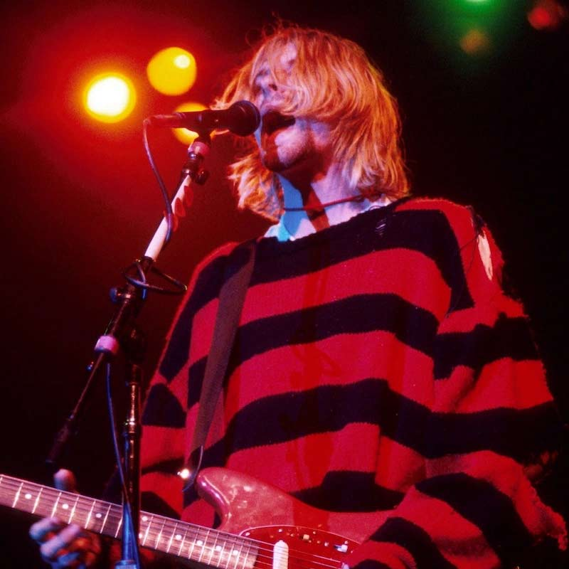

Conspiracies in Media

About
Ever wonder about the media’s most discussed mysteries? Some of the most well known celebrities are associated with very prominent conspiracy theories in the media. From the bizarre 27 Club urban legend to unexplained celebrity imposters, there are nearly endless unexplained stories that have gained attention and interest for years. Wanna learn more about these interesting mysteries? Scroll down and find out about the 27 Club and Celebrity Imposters and the members involved!
27 Club
Read More- 
Kurt Cobain, singer of Nirvana.
Jean-Michel Basquiat, a famous artist.
Celebrity Imposters
Read More
Avril Lavigne, a pop-punk singer.